DefectLens v2 — relatório da avaliação
Priorização de commits para revisão em repositórios Python nunca vistos. Todos os números vêm dos scripts de frente1_treinamento/ e estão em CSV nesta pasta.
Tabela: partição train, dentro do domínio do rótulo
| Método | Repos | AUC mediano | AUC agregado | Topo 10% | R@20% risco | R@20% por linha | Popt por linha | IFA |
|---|---|---|---|---|---|---|---|---|
| Boosting, commit + histórico + código | 23 | 0,780 | 0,767 | 0,801 | 0,079 | 0,524 | 0,822 | 7,000 |
| DefectLens original (82 features, por arquivo) | 23 | 0,778 | 0,773 | 0,821 | 0,090 | 0,524 | 0,824 | 5,000 |
| v2 treinado sem o filtro de domínio | 23 | 0,778 | 0,762 | 0,818 | 0,082 | 0,523 | 0,822 | 5,000 |
| DefectLens v2 (commit + histórico) | 23 | 0,776 | 0,761 | 0,801 | 0,080 | 0,523 | 0,826 | 6,000 |
| v2 com classes equilibradas por repositório | 23 | 0,775 | 0,755 | 0,826 | 0,083 | 0,522 | 0,822 | 9,000 |
| Linhas adicionadas (LA) | 23 | 0,769 | 0,766 | 0,763 | 0,059 | 0,193 | 0,518 | 1,000 |
| LApredict (logística só com LA) | 23 | 0,769 | 0,762 | 0,763 | 0,059 | 0,511 | 0,815 | 13,000 |
| Boosting, só medidas do commit | 23 | 0,769 | 0,754 | 0,797 | 0,075 | 0,518 | 0,822 | 13,000 |
| Logística, medidas do commit | 23 | 0,769 | 0,760 | 0,806 | 0,068 | 0,519 | 0,818 | 13,000 |
| Linhas alteradas (LA + LD) | 23 | 0,762 | 0,761 | 0,769 | 0,059 | 0,200 | 0,495 | 1,000 |
| Número de arquivos (NF) | 23 | 0,708 | 0,697 | 0,757 | 0,105 | 0,416 | 0,738 | 9,000 |
| Aleatório | 23 | 0,501 | 0,502 | 0,400 | 0,197 | 0,458 | 0,759 | 8,000 |
| Menor commit primeiro (ManualUp) | 23 | 0,238 | 0,239 | 0,089 | 0,508 | 0,508 | 0,812 | 13,000 |
Tabela: partição train, todos os commits (como na versão original)
| Método | Repos | AUC mediano | AUC agregado | Topo 10% | R@20% risco | R@20% por linha | Popt por linha | IFA |
|---|---|---|---|---|---|---|---|---|
| v2 treinado sem o filtro de domínio | 23 | 0,785 | 0,771 | 0,809 | 0,097 | 0,557 | 0,865 | 5,000 |
| DefectLens original (82 features, por arquivo) | 23 | 0,784 | 0,781 | 0,828 | 0,103 | 0,564 | 0,860 | 5,000 |
| Boosting, commit + histórico + código | 23 | 0,777 | 0,768 | 0,783 | 0,079 | 0,564 | 0,863 | 9,000 |
| DefectLens v2 (commit + histórico) | 23 | 0,772 | 0,762 | 0,780 | 0,081 | 0,554 | 0,861 | 7,000 |
| v2 com classes equilibradas por repositório | 23 | 0,770 | 0,756 | 0,771 | 0,076 | 0,561 | 0,866 | 9,000 |
| Boosting, só medidas do commit | 23 | 0,764 | 0,755 | 0,776 | 0,073 | 0,571 | 0,866 | 13,000 |
| Linhas adicionadas (LA) | 23 | 0,760 | 0,765 | 0,723 | 0,032 | 0,213 | 0,525 | 2,000 |
| LApredict (logística só com LA) | 23 | 0,760 | 0,761 | 0,723 | 0,032 | 0,571 | 0,867 | 13,000 |
| Logística, medidas do commit | 23 | 0,758 | 0,759 | 0,759 | 0,042 | 0,571 | 0,867 | 14,000 |
| Linhas alteradas (LA + LD) | 23 | 0,755 | 0,758 | 0,712 | 0,023 | 0,203 | 0,495 | 0,000 |
| Número de arquivos (NF) | 23 | 0,708 | 0,696 | 0,730 | 0,091 | 0,445 | 0,786 | 16,000 |
| Aleatório | 23 | 0,501 | 0,502 | 0,386 | 0,197 | 0,500 | 0,803 | 11,000 |
| Menor commit primeiro (ManualUp) | 23 | 0,245 | 0,242 | 0,080 | 0,571 | 0,571 | 0,866 | 12,000 |
Tabela: partições test e val (proporção original), no domínio
| Método | Repos | AUC mediano | AUC agregado | Topo 10% | R@20% risco | R@20% por linha | Popt por linha | IFA |
|---|---|---|---|---|---|---|---|---|
| Boosting, commit + histórico + código | 11 | 0,719 | 0,689 | 0,286 | 0,117 | 0,393 | 0,708 | 22,000 |
| v2 treinado sem o filtro de domínio | 11 | 0,717 | 0,685 | 0,286 | 0,116 | 0,393 | 0,708 | 25,000 |
| DefectLens v2 (commit + histórico) | 11 | 0,716 | 0,683 | 0,333 | 0,110 | 0,400 | 0,708 | 25,000 |
| v2 com classes equilibradas por repositório | 11 | 0,710 | 0,682 | 0,331 | 0,093 | 0,405 | 0,705 | 27,000 |
| Logística, medidas do commit | 11 | 0,710 | 0,702 | 0,333 | 0,091 | 0,415 | 0,712 | 29,000 |
| LApredict (logística só com LA) | 11 | 0,708 | 0,699 | 0,333 | 0,087 | 0,415 | 0,715 | 28,000 |
| Linhas adicionadas (LA) | 11 | 0,708 | 0,700 | 0,333 | 0,087 | 0,178 | 0,539 | 9,000 |
| Boosting, só medidas do commit | 11 | 0,705 | 0,702 | 0,250 | 0,111 | 0,424 | 0,710 | 27,000 |
| Linhas alteradas (LA + LD) | 11 | 0,701 | 0,688 | 0,320 | 0,087 | 0,216 | 0,504 | 4,000 |
| Número de arquivos (NF) | 11 | 0,660 | 0,641 | 0,247 | 0,130 | 0,356 | 0,649 | 25,000 |
| Aleatório | 11 | 0,492 | 0,498 | 0,091 | 0,180 | 0,415 | 0,653 | 29,000 |
| Menor commit primeiro (ManualUp) | 11 | 0,299 | 0,312 | 0,000 | 0,405 | 0,405 | 0,702 | 29,000 |
O dataset: partições e construção
A taxa de defeito de train não é natural: o Defectors reamostra os commits limpos. As partições test e val guardam a proporção original, e por isso viram o teste de sensibilidade, e não um defeito do rótulo.
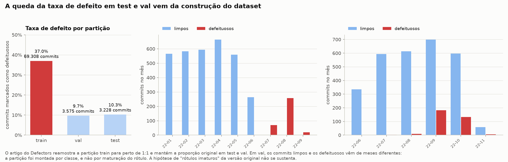
Domínio do rótulo
Commits acima do corte do Defectors são limpos por construção. Ficam fora do treino e da avaliação principal.
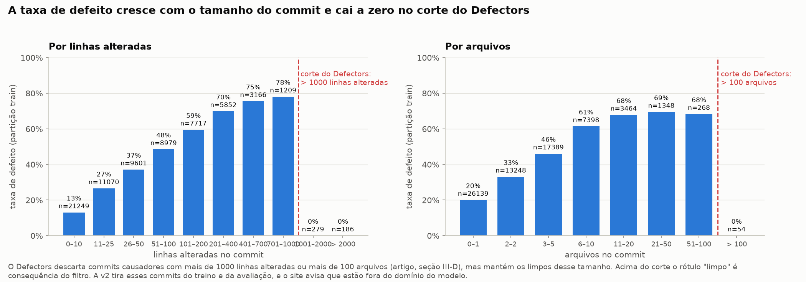
Efeito do filtro de domínio
Antes e depois de tirar da avaliação os commits fora do domínio.
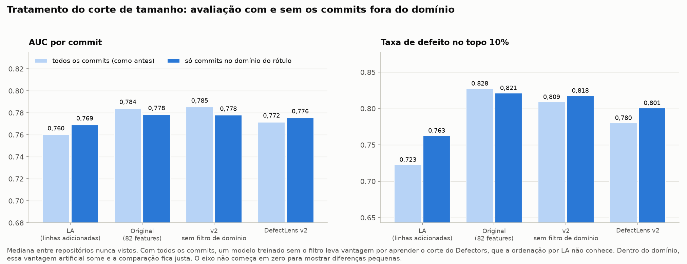
Comparação por repositório
Cada repositório fica de fora do treino uma vez.
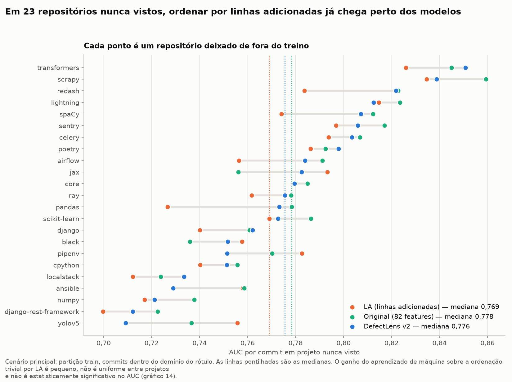
Todos os métodos
Baselines triviais, modelos e o DefectLens original nos mesmos commits.
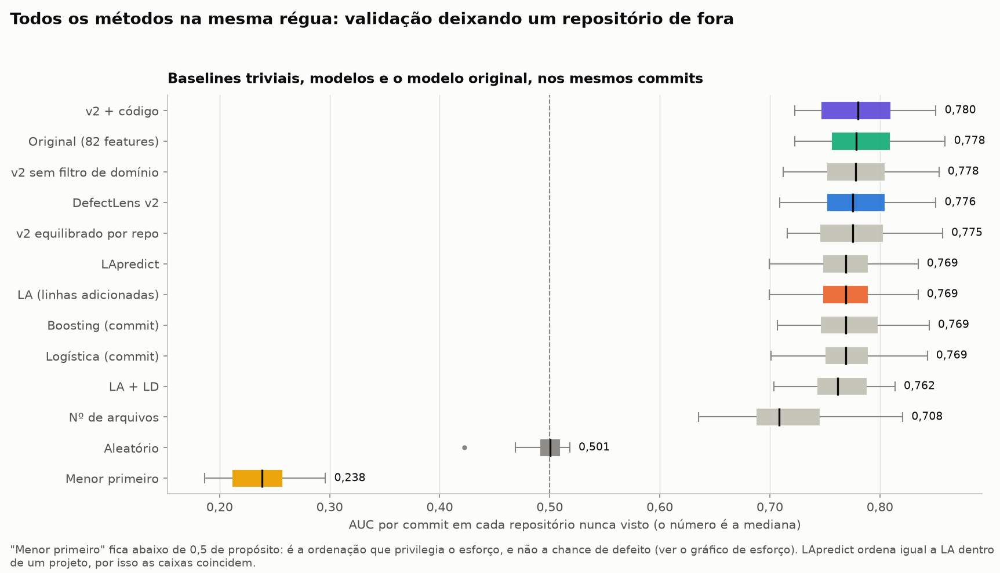
Antes e depois de cada mudança
O que cada grupo de medidas acrescenta.
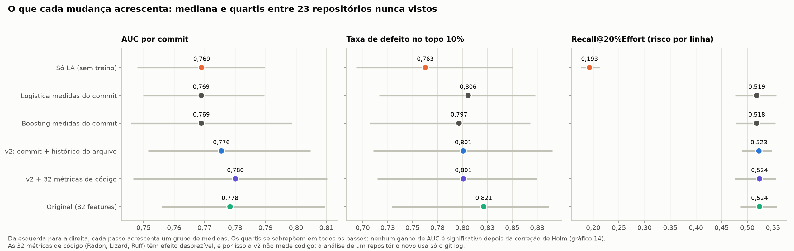
Significância
Wilcoxon pareado entre repositórios, correção de Holm e delta de Cliff.
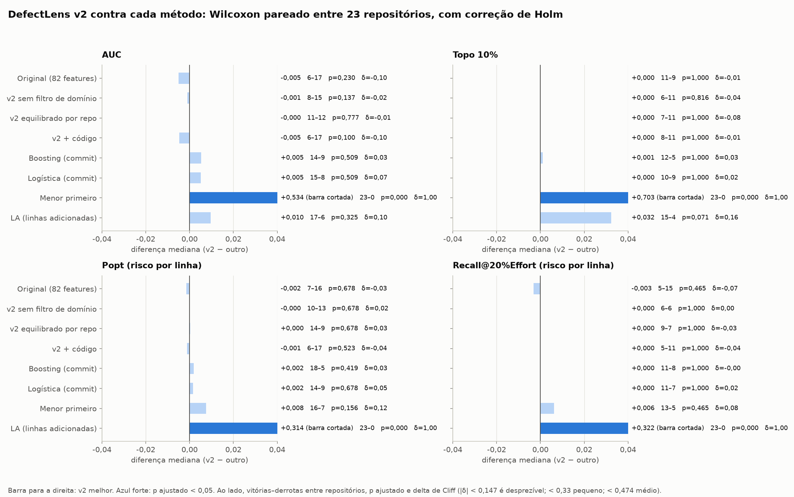
Curvas ROC
Com todos os commits juntos, nos dois cenários.
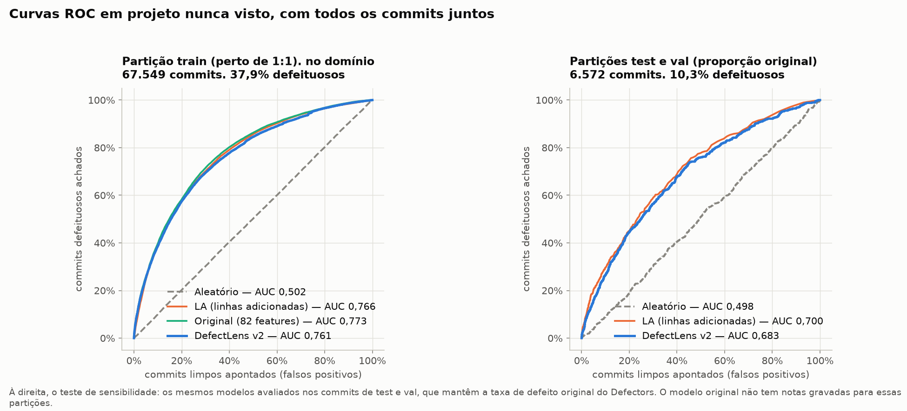
Curvas de esforço
Defeitos encontrados conforme as linhas revisadas.
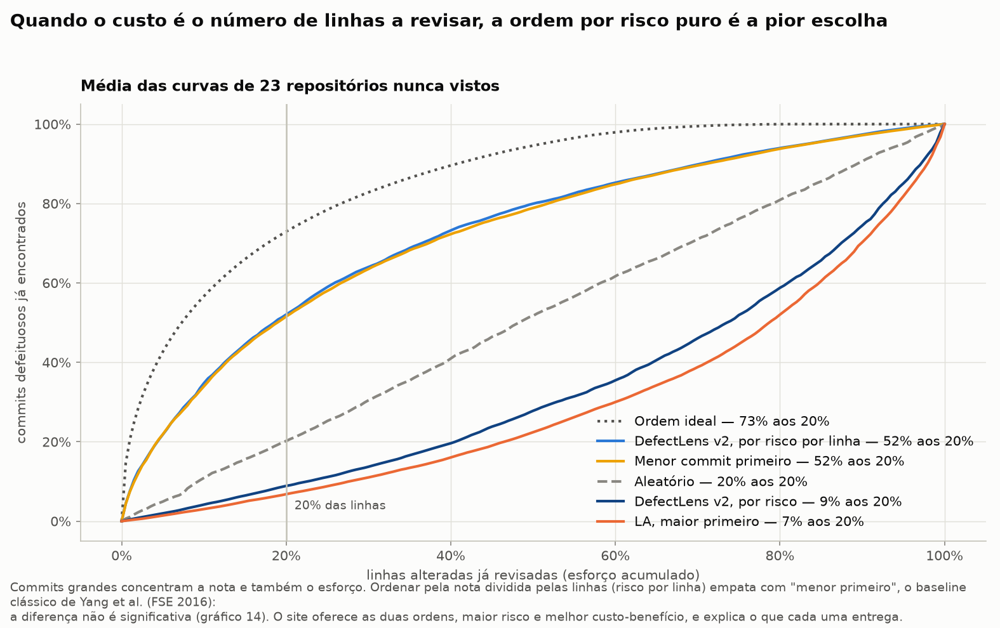
Medidas que consideram o esforço
Recall@20%Effort e Popt.
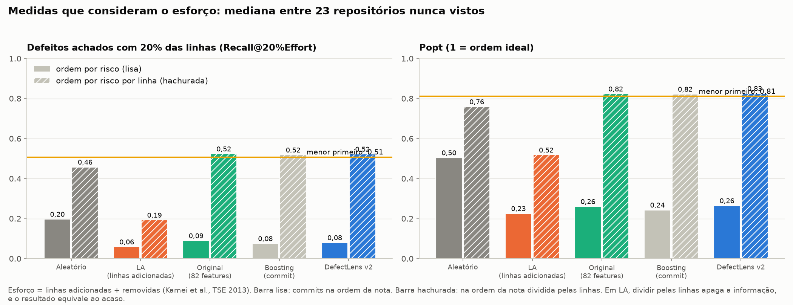
Sensibilidade: proporção original
Os mesmos modelos avaliados em test e val.
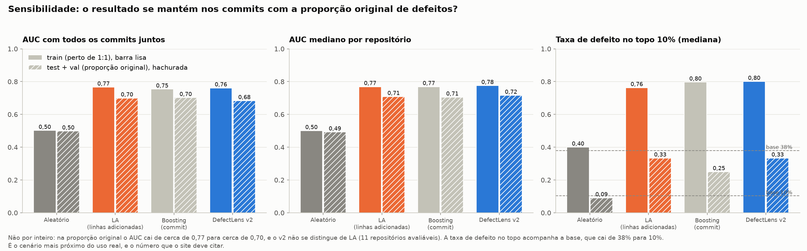
Importância por permutação
Medida no repositório deixado de fora.
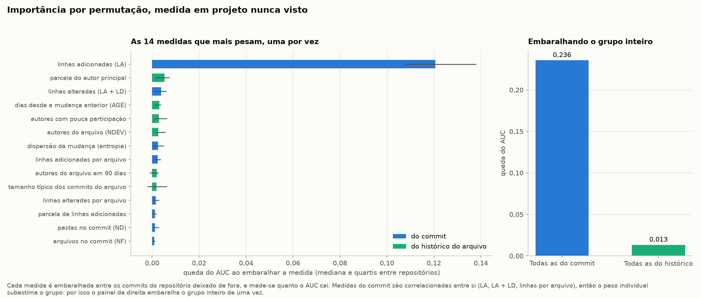
Calibração
A nota bruta não é uma chance; a calibrada se aproxima.
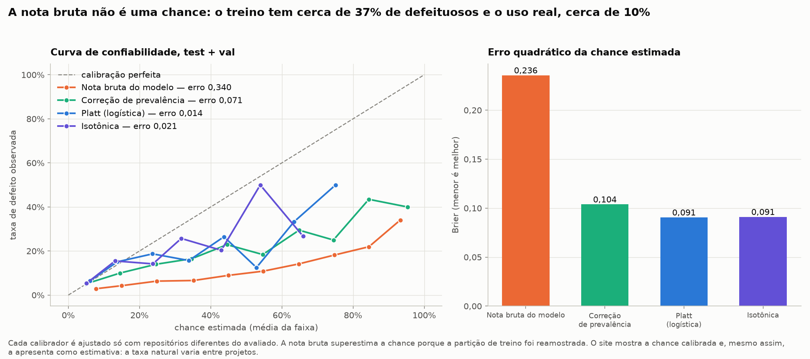
Faixas de risco do site
A taxa de defeito observada em cada faixa.
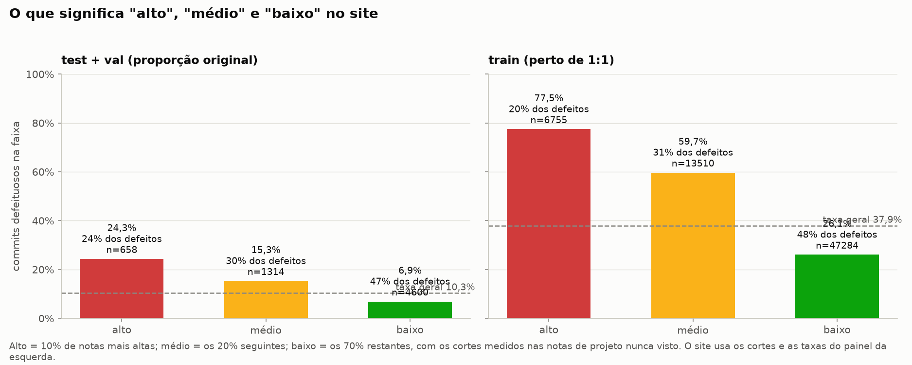